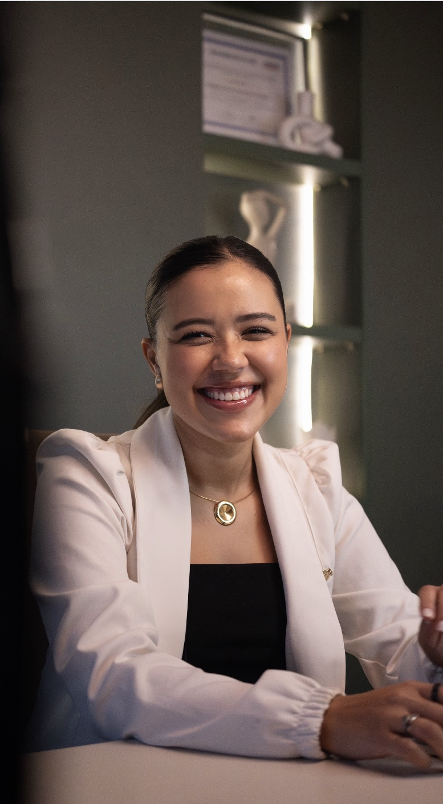
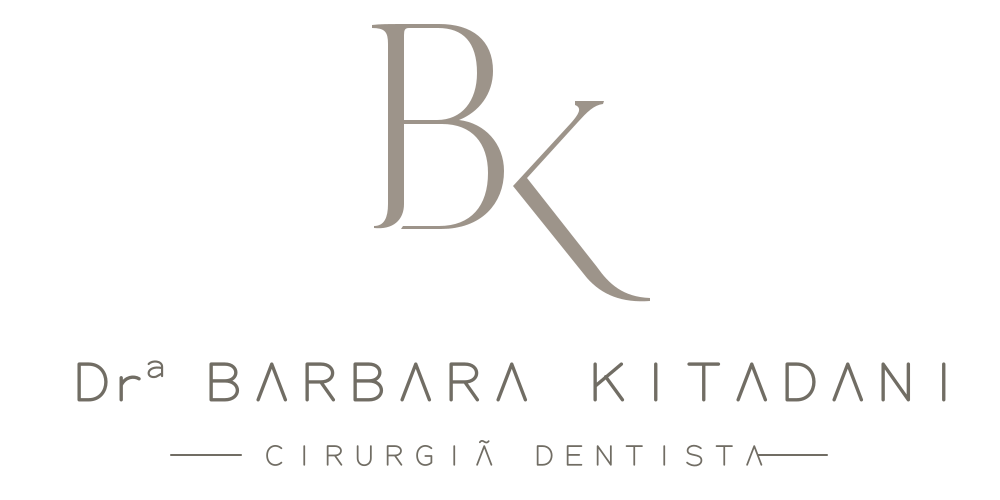

A fonte Montserrat requer conexão com Google Fonts neste estudo; se não carregar, será exibida Arial.
Barbara Kitadani
Cuidado que começa na escuta.
Um olhar atento à sua história, à sua anatomia e ao que faz você se sentir bem.
Agendar avaliaçãoAmostra visual do botão, sem agendamento. Texto proposto para avaliação.

01 · Cores
Luz, pele e natureza.
Base clara e quente, verde oliva nos acentos e verde profundo em pequenos contornos e destaques. Grafite permanece nos textos corridos.
Porcelana
#F7F6F2
Branco
#FFFFFF
Areia
#E8E1D8
Oliva · acento
#708D3E
Verde profundo · detalhes
#1F2711
Pedra
#716D64
Grafite
#292824
Névoa
#D5CEC5
02 · Tipografia
Montserrat
Proposta por afinidade com o nome no logo; a fonte original ainda não foi identificada.
Seu rosto. Sua história. · 300
Seu rosto. Sua história. · 400
Seu rosto. Sua história. · 500
PELE · FACE · SORRISO
Avaliação, harmonização e cuidado com você. A tipografia deve acolher a leitura, inclusive nas telas pequenas.
03 · Aplicação
Um cuidado pensado para você.
Atendimento próximo, planejamento individualizado e respeito à naturalidade.
04 · Marca

Reconstrução aproximada em revisão. Não substitui a aprovação do desenho original.